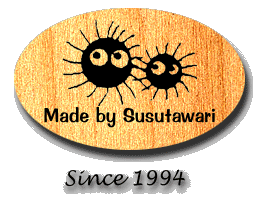

 |
[English] |
|
リンクはご自由に。各ドキュメントへの直リンクなども可です。 ご意見、ご感想などはこちらまで。 E-mail: susu@susutawari.org |
|
| りんく用ばなー(88x31 pixel) |
|
| りんく用ばなー(200x40 pixel) |
|
| ※本Webサイト内にある、すすたわり (N.Aibe)の作成したドキュメント、 画像などは全てN.Aibeが著作権を有しています。 | |
| Copyright (C)1994-2013 Noriyuki Aibe. All Rights Reserved. | |